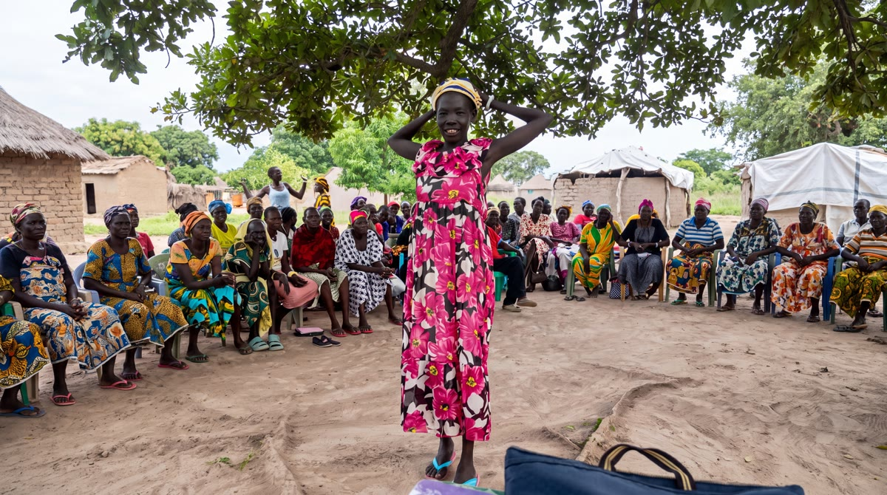
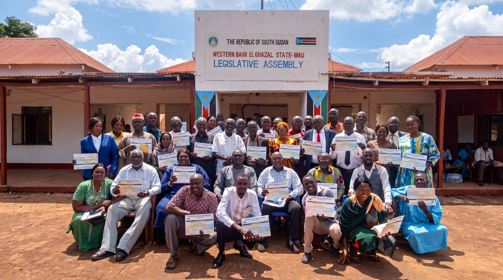
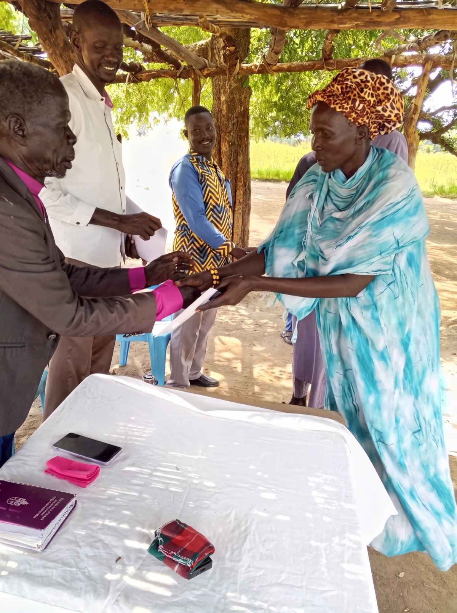

The final week of a four-week invitation from Favor International
Closing Friday, September 4, at 11:59pm
So Trauma Counseling runs on a schedule instead of on an appeal, and the next village does not wait to be funded before it is reached.
Not 48 gifts. 48 people who decide this happens every month.
A message from Carole
Recorded in the field, in her own voice.
$50 a month sends one person through the entire two-week Trauma Counseling intensive.
A one-time gift helps. A monthly one is what puts the next class on the schedule.
$50 a month sends one person through the entire two-week intensive. One person a month. Twelve a year.
Become a monthly partner · $50/monthCancel or change any time. Takes about ninety seconds.
Favor International is a 501(c)(3). Your gift is tax-deductible.
$50
One person, all the way through.
Two weeks of all-day teaching. The one-on-one counseling after it. The curriculum in their hands, their certificate, and the cost of sending our missionaries out two by two and keeping them there while the work is done.
48
People, not gifts.
Forty-eight decisions that this happens every month. When the giving is steady, we schedule the next village. When it is not, the next village waits.
Sep 4
A real date, not a decorative one.
Four weeks. On Friday, September 4 we count what came in, and the classes we can schedule for the rest of the year are the ones this decides.
The final week · a letter from Carole
Twenty-four years ago I asked God to send me
where no one wants to go. He took me at my word.
I was a nurse. Before that I spent twenty years as a therapeutic foster parent for children who had been traumatized, which is the detail of my own life I think about most often now, though I did not understand it at the time. Then a three-week trip to Uganda ruined me for anything else. What good can anyone do in three weeks? I went back to stay.
When I first came, I did not have a program. I had a rented room, and a few people who met with me every morning to pray. What we found around us was a great deal of pain that no one had ever been able to say out loud. I told him the only thing I had to offer: I did not come here to sow a seed. I came to sow my life.

Then in 2004, God sent us a doctor.
He was a believer from Australia, a physician who had been a missionary in Tanzania, and he had spent years learning what war does to a heart and how a heart heals. He had written a teaching for the children of that war: five steps, all built on forgiveness, every one of them from scripture, and written plainly enough that ordinary people could learn it without ever being licensed counselors.
He had taken it to several organizations. The violence made it impossible for them to send anyone in. So he came to the people who were already there.
I have to tell you exactly what I said to him, because it is not impressive. I said: Why are you asking me? Who am I? I am just here to pray, that is the only thing I know how to do. You are going to have to ask the people here. I do not dictate their vision. It is their heart and their land.
He spent three days explaining it to them. Not to me. To them. And at the end of it they told him the truest thing anybody said that week: “We can only understand what this means if you show us.”
So we gave him a week and I sat in it with everybody else. He took a roomful of people from weeping, through the pain, into letting go of what they were holding against each other, and out the other side into forgiveness. By the end of the week there was laughter in that room. I had not heard laughter in that place before.
By Friday we all knew this was what the nation needed. We held the first class in 2004. We have never stopped.

I could not have predicted what it opened. We have taught it to soldiers in uniform, in police barracks and government offices, in villages where revenge is planned three generations out, and in places that had no interest in a missionary and every interest in the thing everybody has: a heart that will not stop hurting.
We ask one question on the radio: do you have nightmares, anger, fear, pain in your heart? And who does not have at least one of those. They come, grassroots to government, young and old, men and women together. We have had two thousand people in a single class. In those two weeks, nearly everyone in the room gives their life to Christ.
And then, almost every time, somebody asks the question I never get tired of hearing: “Do you have the next step?” That is when the discipleship classes begin. That is when the portable Bible schools begin. That is when a village has its own leaders instead of visitors. Everything Favor does after that class is standing on somebody's heart being healed first.

Here is why trauma healing comes first with us.
Jesus said the Spirit of the Lord had anointed Him to heal the brokenhearted, and He said it before He said anything about opening blind eyes or raising the dead. That order has never left me. A heart that is still bleeding keeps wounding the people around it, and that is how a family breaks, and then a village.
Trauma healing is the door. Everything else walks through it.
A class happens when it is provided for. When the giving is steady, our team can put the next village on the schedule and tell the missionaries when they are going, and they stay the full two weeks. Steady giving settles that question before anyone has to ask it.
I am not asking you to fund an organization. Money has never been the point here. Every dollar is a soul. What I am asking for is a rhythm we can plan on.
People sometimes ask what to call me. If I have to have a title, I would rather put doorkeeper on my card than director, because how better to be a doorkeeper in the house of God. That is really all I am asking you to be this week. There is a door open in villages nobody drives to, and it stays open because people keep it open, every month.
Carole Ward
Favor International
The part we have never told you plainly
Every Trauma Counseling class Favor holds is a two-week intensive that has to be paid for before a single person walks in. The teacher. The travel. The curriculum. The room. The two weeks of one-on-one counseling that come after the teaching ends.
When the giving is steady, we schedule the next village. When it is not, the next village waits.
Across Upper Nile State there are still so many like Madina. Women and men sitting in villages, and even in churches, quietly carrying revenge, generational pain, and wounds that have never healed. They are one class away from the freedom she found.
We would like to stop making them wait.
What $50 a month actually pays for
Not a contribution toward a general fund. A named, priced, countable thing: everything one person needs to go from the day they walk in to the day they walk out with a certificate in their hand.
All day, every day, for two full weeks of learning and healing together.
After the teaching ends, someone sits with them through the deepest part of the healing.
Written for Africa, in their own language, theirs to keep long after the class moves on.
Completion, named and celebrated. Look at the joy in the faces holding them.
Sent out two by two, just as Jesus did. Fuel into villages other people do not drive to, and a place to stay for the full two weeks.


One person a month. Twelve a year. That is what steady giving buys that a single gift cannot: not a bigger moment, but a next one.
The invitation, plainly
Not 48 gifts. 48 people who decide this happens every month.
It takes about ninety seconds, you can change or cancel it any time, and from your very first month, one person walks into one of those rooms because of your partnership.

Every certificate in this photo is a person who walked in carrying something heavy and walked out with a testimony. Farmers and mothers, pastors and police, even generals. The next class is ready to gather right now.
There is a village on the schedule right now that is waiting on a decision like yours.
Where your gift goes
Indigenous workers, Portable Bible Schools, Trauma Counseling, Village Learning Centers, medical care, and women's empowerment.
Audit, accounting, payroll, donor care, and governance. Source: FY2024 audited financials filed with ECFA and IRS Form 990.
Raise it, lower it, pause it, or cancel it any time by replying to any receipt or calling the office. No forms, no waiting on hold.
Before you decide
Yes. The levels are a starting point, not a rule. Choose the amount that fits your household. A $25 monthly gift that survives a hard month is worth more to this work than a $50 one that gets cancelled in March.
Favor Partner gifts are unrestricted, which lets our field leadership put them where the need is greatest that month. Trauma Counseling is what this campaign is funding and what steady giving keeps on the calendar, and it sits inside a wider work: Portable Bible Schools, Village Learning Centers, medical care, and women's empowerment.
Your first gift processes immediately through the secure giving form and you receive a tax-deductible receipt by email. Then you hear from us: the stories, the prayer requests, and the names of the people your partnership is reaching.
Any time, for any reason, with no conversation required. Reply to any receipt or call the office and a real person will handle it.
Yes. Favor International is a 501(c)(3) nonprofit and an ECFA-accredited member. Audited statements and Form 990s are published on our accountability page.
Because a two-week class has to be paid for before it opens. A single gift funds a moment. A monthly gift is what lets our field leaders put the next village on the schedule and know it will still be funded when the date arrives. That is the difference between a program that runs and a program that waits.
Closing Friday, September 4, at 11:59pm
One person a month, from your very first month. About ninety seconds to start, and yours to change or cancel any time.
Become a monthly partner · $50/monthWith you in the harvest — Carole Ward and the Favor International Family